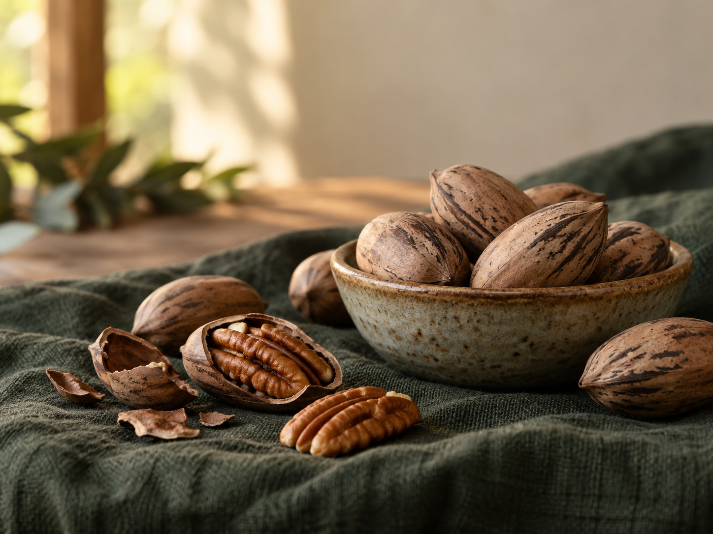

Know the source
Link each product to a CMS-managed grower story.
From Red Ridge Orchard · Sample listing

Product detail pattern
This fictional product page shows how the final site can give visitors useful information without forcing producers into a single checkout system.
In production, this CTA can link to a producer store, market calendar, phone/email button, or approved ecommerce flow.
Keep exploring
Link each product to a CMS-managed grower story.
Publish availability windows rather than stale inventory claims.
Direct visitors to pickup, a partner market, or producer contact.